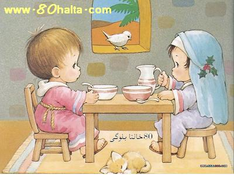

ئالدىنقى يازما
ئالدىنقى يازما كېيىنكى يازما
كېيىنكى يازما
ئوغۇل ياكى قىز پەرزەنتلىك بولۇشنىڭ يېڭىچە ئۇسۇلى
ئاپتور:Birzat ۋاقتى:2010-05-26



نۇرغۇنلىغان ئەر-خوتۇنلار تويدىن كىيىن تۇغۇتقا كەلگەندە ، زادى تۆرەلمىنىڭ جىنسىي پەرقىنى ئالدىنئالا بىلگىلى بولىدىغان ئىشەنچلىك بىر چارىسى بارمۇ، بىر قېتىمدىلا ئوغۇل تۇغۇش ياكى قىز تۇغۇشنىڭ زادى ياخشى بىر ئۇسۇل-چارىسى بارمۇ-يوق؟ دېگەندەك مەسىلىلەردە بەك باش قاتۇرىدۇ. يېقىنقى يىللاردىن بۇيان تىببى ئىلىم ساھەسىدە تۆرەلمىنىڭ جىنس مەسىلىسى توغرىسىدا كۆرىنەرلىك نەتىجىلەر قولغا كەلتۈرۈلدى. ياپۇنيىدىكى زاۋداۋتىيەن ئۇنۋېرسىتىتېنىڭ پروفېسورى تىيەنجۇڭ جيۇبىننىڭ تەتقىقات نەتىجىسىدە ئوغۇل ياكى قىز پەرزەنت كۆرۈشتە ئىلمى ئاساسقا ئىگە ئالاھىدە ئۇسسۇلنى تېپىپ چىقتى. ئەرلەر سپېرمىسى ئىچىدە ئىككى خىل ئۇرۇق بولۇپ، بىرىنىڭ جىنسىي خىروموسومىسى << Y>> لىق ئۇرۇق، يەنە بىرىنىڭ خىروموسومىسى << X>> لىق ئۇرۇق بولىدۇ. ئەگەر << Y>> لىق ئۇرۇق ئايالنىڭ تۇخۇمى بىلەن جۈپلەشسە ، تۆرەلمە ئوغۇل بولۇپ شەكىللىنىدۇ. ئەكسىچە
ئېرىك سايرانى ئەپەندىنىڭ << جىنسىي ئاجىزلىق ۋە ئۇنى داۋالاش>> ناملىق كىتابىدا سۆزلەنگەن يۇقۇرقى قاراشلارغا كىچىككىنە قىستۇرما قويۇپ ئۆتسەك ئارتۇقچە بولمىسا كېرەك!
قۇرئان كەرىمدە
<< تۆكۈلگەن مەنىدىن ئەركەك -چېشى ئىككى جىنسنى ياراتتۇق>> دېگەن ، نەجىم سۈرىسى 45-46- ئايەتلەردىكى << مەنىدىكى ئەركەك-چېشى >> دەل پروفېسورى تىيەنجۇڭ جيۇبىن ئوتتۇرغا قويغان ئەرلەر سپېرمىسى ئىچىدە ئىككى خىل ئۇرۇق بولۇپ، بىرىنىڭ جىنسىي خىروموسومىسى << Y>> لىق ئۇرۇق، يەنە بىرىنىڭ خىروموسومىسى << X>> لىق ئۇرۇق دېگەن تەتقىقاتتا ئىسپاتلانغان قاراشتۇر.
يەنە ھەدىس شەرىفتە رەسۇلۇللا ئەلەيھىسسالامنىڭ << ئەر-ئايال تۆشەكتە بىللە بولغاندا مۇزەككەر (ئەرلىك ئۇرۇق) غالىپ كەلسە تۇغۇلغان بالا دادىسىغا ئوخشايدۇ، ئەگەر مۇئەننەس ( ئاياللىق ئۇرۇق ) غالىپ كەلسە تۇغۇلغان بالا ئانىسىغا ئوخشايدۇ. -سەھىھۇل بۇخارى.
( مەن كۆرگەن ھەدىسنىڭ ئاساسلىق مەزمۇنى مۇشۇنداق ئىدى. ۋاللاھۇ ئەئلەم) بۇ ھەدىس شەرىپتىكى مەزمۇن دەل <<ئەگەر << Y>> لىق ئۇرۇق ئايالنىڭ تۇخۇمى بىلەن جۈپلەشسە ، تۆرەلمە ئوغۇل بولۇپ شەكىللىنىدۇ. ئەكسىچە
شۇڭا كۆپچىلىكنىڭ ياپۇنيىلىك پروفېسورنىڭ <<ئوغۇل ياكى قىز تۇغۇشنىڭ يېڭىچە ئۇسۇلى >> ھەققىدىكى قاراشلىرىدىن چۈچۈپ كەتمەي ئىلمىي ھالدا چۈشۈنۈپ پايدىلىنىشىنى تەۋسىيە قىلىمەن.
1. ئوغۇل تۇغۇشنىڭ ئۇسۇلى:
1) ئايال ھەيز كۆرگەن بىرىنجى كۈنىدىن باشلاپ ئەر كىشى گۆش ، بىلىق قاتارلىق كۈچلۈك ئوزۇقلۇقلارنى ئىستىمال قىلىشى، ئايالى ھەيز كۆرگەن كۈندىن باشلاپ 10 كۈنگىچە جىنسىي مۇناسىۋەتنى توختىتىپ تۇرىشى لازىم. ئەگەر ئەرنىڭ جىنسىي ئىقتىدارى ئاجىزراق ياكى مەنى (سپېرمىسى) ئاز بولسا ، ئايالىنىڭ ھەيز كۆرگەن كۈندىن باشلاپ تاكى 15-كۈنىگە قەدەر، ئەر جىنسىي ئىقتىدارىنى كۈچەيتىدىغان ، مەنىنى كۆپەيتىدىغان ئوزۇقلۇقلارنى ( ئۇيغۇر تىبابەت دورىلىرىدىن ھالۋايى بەيزە، لۇبۇبى كەبىر، مەجۈنى سۆئىلەپ...قاتارلىق دورىلار بولىدۇ ) ئىستىمال قىلىپ بەرسە ئۈنۈمى تېخىمۇ ياخشى بولىدۇ.
2) ئايال ھەيز كەلگەن كۈندىن باشلاپ گۆش، بېلىق قاتارلىق قۇۋۋەتلىك تائاملارنى يېمەي، كۆپۈنچە تاتلىق تاماقلارنى يېيىشى، 10-كۈنىگىچە ئېرى بىلەن جىنسىي مۇناسىۋەتتە بولماي، 11-كۈنىدىن باشلاپ جىنسىي مۇناسىۋەتنى باشلىشى لازىم. مۇناسىۋەت قىلىشنى ئالدىدا بىر لىتىر مۇزلىتىلغان قايناقسۇغا ( ئوتتۇرا ھېسابتا تۆت پىيالە بولسا بولىدۇ) ئىككى قوشۇق سودا سېلىپ ، تامامەن ئىرىپ بولغاندىن كىيىن ، بۇ سۇ بىلەن ئۆز جىنسىي يولىنى يۇيىشى كېرەك. سۇ جىنسىي يول ئىچىگە كىرىپ جىنسىي يولىنىڭ ئىچى ئىشقارلىنىشى لازىم. مانا مۇشۇ ئۇسۇلدا ئېرى بىلەن ئۇدا ئۈچ كېچە مۇناسىۋەتتە بولماقلىقى لازىمدۇر.
2. قىز تۇغۇشنىڭ ئۇسۇلى
1) ئېرى ئايالىنىڭ ھەيز كۆرگەن بىرىنجى كۈنىدىن باشلاپ تا 15-كۈنىگىچە بولغان ئارلىقتا كۆتاتلىق تائاملارنى يەپ ، گۆش، بېلىق قاتارلىق قۇۋۋەتلىك تائاملارنى يېمەسلىكى لازىم.
2) ئايال بولغۇچى ھەيز باشلىنىپ بىرىنجى كۈنىدىن ھېسابلاپ 15-كۈنىگىچە گۆش ، بېلىق قاتارلىق قۇۋۋەتلىك تائاملار بىلەن كۆپلەپ ئوزۇقلىنىپ سەيلەرنى ئاز يېيىشى ( ئۇندىن باشقا لەڭپۇڭ، راڭپىزا، كالا گۆشلۈك ئۈگرە..دېگەندەك سوغۇق تەبىئەتلىك يىمەكلىكلەردىنمۇ ساقلىنىشى زۆرۈر) كېرەك.
3) ئايال ھەيز كىلىپ، بىرىنجى كۈنىدىن 10-كۈنىگىچە جىنسىي مۇناسىۋەتنى توختىتىپ ، 11-كۈنىدىن باشلاپ ئېرى بىلەن جىنسىي مۇناسىۋەتتە بولۇشى كېرەك.
جىنسىي مۇناسىۋەتنى باشلاشتىن ئىلگىرى بىر قوشۇق ئاق سېركىنى ( سىركە كىسلاتاسىنى) مۇزللىتىلغان بىر لىتىر قايناق سۇغا سىلىپ ، جىنسىي يولنى يۇيۇشى، سۇيۇقلۇق جىنسىي يول ئىچىگە كىرىشى لازىم
. شۇنداق قىلغاندىلا جىنسىي يولنىڭ ئىچىنى كىسلاتالىق خاراكتېرگە ئىگە قىلغىلى بولىدۇ. ئاندىن ئېرى بىلەن ئۇدا ئۈچ كۈن جىنسىي مۇناسىۋەتتە بولۇشى كېرەك.
ئېرك سايرانى ئەپەندىنىڭ بايان قىلىشىچە پروفېسورى تىيەنجۇڭ جيۇبىن ئوتتۇرغا قويغان يۇقۇرقى ئۇسسۇللار تۈمەن مىڭلاپ تەجىرىبە قىلىش ئارقىسىدا ئىسپاتلانغان بولۇپ ، ئىشەنچلىك تەرىپى 90% نى تەشكىل قىلىدۇ. بۇ ئۇسۇل ئانا بەدىنى ۋە تۆرەلمىگە ھېچقانداق ئەكس تەسىر كۆرسەتمەيدۇ.
توغرىسىنى بىلگۈچى - تۆكۈلگەن مەنىدىن ئەركەك-چېشىنى ياراتقۇچى ، مەخلۇقلارنىڭ تەقدىرىنى ئالدىنئالا بىلگۈچى ئاللاھتۇر.
مۇھەممەد تۇرسۇن (بىرزات)

 يازما مەنبەسى: بېكەت ئەسىرى
يازما مەنبەسى: بېكەت ئەسىرى خەتكۈش:
خەتكۈش:  مۇناسىۋەتلىك يازمىلار:
مۇناسىۋەتلىك يازمىلار:
ئىنكاس: 2 | نەقىل: 0 | كۆرۈلگىنى: -
 قايتۇرما
قايتۇرما
ئىنكاس يوللاش
ئۇيغۇر تىبابىتىدە قىز پەرزەنىت ياكى ئوغۇل پەرزەنىت كۆرۇشنىڭ ياخشى ئۇسۇلى بارمۇ؟ ھامىلدار بولۇشتىن بۇرۇن نىمىلەرگە دىققەت قىلىش، قانداق ئىشلار قىلىش كېرەك؟ تەپسىلىي سۆزلەپ بەرسىڭىز؟
ئاللاھ ھەممىمىزگە رەھمەت قىلسۇن!